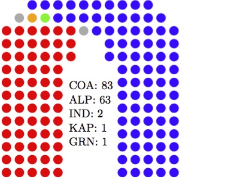

Current forecast

Current seat-by-seat forecast (Mackerras pendulum)
Forecast last updated on 17/4/2016 at 4:46 AEST
| ALP | COA |
|---|---|
| Reid: NSW (50.08) | Melbourne Ports: VIC (50.32) |
| Banks: NSW (50.17) | Page: NSW (50.34) |
| Lyons: TAS (50.31) | Hindmarsh: SA (50.37) |
| Eden-Monaro: NSW (50.35) | Robertson: NSW (50.77) |
| Dobell: NSW (50.5) | Lindsay: NSW (50.97) |
| Barton: NSW (50.61) | Braddon: TAS (51.19) |
| Bruce: VIC (50.91) | Forde: QLD (52.36) |
| Capricornia: QLD (51.17) | Bonner: QLD (52.75) |
| Bendigo: VIC (51.27) | Bass: TAS (53.22) |
| Chisholm: VIC (51.33) | Hasluck: WA (53.23) |
| Moreton: QLD (51.7) | Boothby: SA (53.45) |
| Solomon: NT (51.93) | Dunkley: VIC (53.69) |
| Parramatta: NSW (52.04) | Gilmore: NSW (53.74) |
| Petrie: QLD (52.27) | Deakin: VIC (53.86) |
| Griffith: QLD (52.48) | La Trobe: VIC (53.9) |
| McEwen: VIC (52.63) | Leichhardt: QLD (54.28) |
| Jagajaga: VIC (52.63) | Flynn: QLD (54.83) |
| Brand: WA (52.71) | Macquarie: NSW (55.45) |
| Lilley: QLD (52.92) | Cowan: WA (55.63) |
| Oxley: QLD (53.37) | Longman: QLD (55.91) |
| Fremantle: WA (53.47) | Herbert: QLD (56.04) |
| Werriwa: NSW (53.67) | Corangamite: VIC (56.07) |
| Adelaide: SA (54.36) | Brisbane: QLD (56.12) |
| Richmond: NSW (54.37) | Swan: WA (56.26) |
| Lingiari: NT (54.56) | Dickson: QLD (56.61) |
| Isaacs: VIC (54.68) | Aston: VIC (57.01) |
| Perth: WA (55.28) | Dawson: QLD (57.12) |
| Kingsford Smith: NSW (55.56) | Paterson: NSW (57.44) |
| Franklin: TAS (55.85) | Bennelong: NSW (57.68) |
| Greenway: NSW (55.94) | Fairfax: QLD (58.01) |
| Ballarat: VIC (56.53) | Bowman: QLD (58.13) |
| Wakefield: SA (56.65) | Casey: VIC (58.26) |
| Canberra: ACT (56.99) | Hinkler: QLD (58.3) |
| Blair: QLD (57.57) | Hughes: NSW (58.95) |
| Throsby: NSW (57.62) | Stirling: WA (59.19) |
| Shortland: NSW (57.72) | Macarthur: NSW (59.76) |
| McMahon: NSW (58.38) | Sturt: SA (59.77) |
| Rankin: QLD (58.57) | Wannon: VIC (60.0) |
| Makin: SA (59.01) | Cowper: NSW (60.91) |
| Corio: VIC (59.09) | Ryan: QLD (60.98) |
| Watson: NSW (59.45) | Goldstein: VIC (61.24) |
| Hunter: NSW (59.93) | Canning: WA (61.68) |
| Cunningham: NSW (62.01) | McMillan: VIC (61.96) |
| Newcastle: NSW (62.09) | Higgins: VIC (62.49) |
| Hotham: VIC (62.12) | Grey: SA (62.58) |
| Fraser: ACT (62.88) | Calare: NSW (62.89) |
| Maribyrnong: VIC (62.95) | Fisher: QLD (62.97) |
| Holt: VIC (63.08) | Pearce: WA (63.33) |
| Kingston: SA (64.23) | Moore: WA (63.54) |
| Sydney: NSW (64.29) | Flinders: VIC (63.65) |
| Chifley: NSW (64.88) | Mayo: SA (63.85) |
| Blaxland: NSW (65.92) | McPherson: QLD (63.85) |
| Lalor: VIC (66.51) | Forrest: WA (64.08) |
| Calwell: VIC (67.03) | Tangney: WA (64.29) |
| Charlton: NSW (67.78) | Wright: QLD (64.31) |
| Batman: VIC (68.77) | Kooyong: VIC (64.35) |
| Scullin: VIC (68.92) | Menzies: VIC (64.8) |
| Port Adelaide: SA (69.76) | Hume: NSW (64.89) |
| Gellibrand: VIC (69.76) | Wide Bay: QLD (65.11) |
| Gorton: VIC (70.04) | Gippsland: VIC (65.76) |
| Wills: VIC (70.36) | Cook: NSW (66.47) |
| Grayndler: NSW (70.39) | Fadden: QLD (66.49) |
| Fowler: NSW (72.0) | Farrer: NSW (66.71) |
| Groom: QLD (67.51) | |
| Lyne: NSW (68.01) | |
| Moncrieff: QLD (68.16) | |
| Berowra: NSW (68.33) | |
| North Sydney: NSW (68.68) | |
| Murray: VIC (68.81) | |
| Warringah: NSW (69.43) | |
| Riverina: NSW (70.18) | |
| Wentworth: NSW (70.28) | |
| Curtin: WA (70.67) | |
| Parkes: NSW (70.96) | |
| Mackellar: NSW (71.22) | |
| Mitchell: NSW (71.71) | |
| Barker: SA (71.78) | |
| New England: NSW (72.55) | |
| Durack: WA (72.61) | |
| Bradfield: NSW (73.35) | |
| Maranoa: QLD (73.49) | |
| O’Connor: WA (76.37) | |
| Mallee: VIC (77.49) |